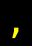
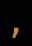
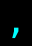

記号 , のモンスター / Monsters with symbol ,
画面上で , と表示されるモンスター（16 種）。
Monsters displayed as , on screen (16).
← 記号から探す / Browse by symbol · モンスター索引 / Index
| ID | 記号 / Sym | 名前 / Name | 階層 / Lv | 希少度 / Rar | 速度 / Spd | 体力 / HP | AC | 経験値 / Exp |
|---|---|---|---|---|---|---|---|---|
| 22 | 点滅する点 Blinking dot |
1 | 1 | 110 | 1d2 | 1 | 3 | |
| 40 | 絶叫おばけキノコ Shrieker mushroom patch |
2 | 1 | 110 | 1d1 | 1 | 3 | |
| 47 |  |
黄おばけキノコ Yellow mushroom patch |
2 | 1 | 110 | 1d1 | 1 | 3 |
| 924 |  |
クリボー Goomba |
2 | 1 | 110 | 4d4 | 20 | 5 |
| 72 | 斑点おばけキノコ Spotted mushroom patch |
3 | 1 | 110 | 1d1 | 1 | 4 | |
| 108 | 紫おばけキノコ Purple mushroom patch |
6 | 2 | 110 | 1d1 | 1 | 15 | |
| 184 | 透明おばけキノコ Clear mushroom patch |
10 | 2 | 115 | 1d1 | 1 | 3 | |
| 185 | 矢筒スロット Quiver slot |
10 | 2 | 120 | 1d1 | 1 | 3 | |
| 962 | スライムモルド Slime Mold |
12 | 4 | 105 | 2d8 | 0 | 10 | |
| 267 |  |
魔法おばけキノコ Magic mushroom patch |
15 | 2 | 130 | 1d1 | 10 | 10 |
| 904 | 混沌おばけキノコ Chaos mushroom |
23 | 3 | 120 | 16d6 | 4 | 360 | |
| 425 | <ティーンチ>の火炎悪魔 Flamer of Tzeentch |
27 | 2 | 110 | 60d15 | 70 | 500 | |
| 437 | コープサー Corpser |
28 | 2 | 112 | 30d15 | 75 | 65 | |
| 486 | 記憶苔 Memory moss |
32 | 3 | 110 | 1d2 | 1 | 150 | |
| 863 | 量子ドット Quantum dot |
35 | 5 | 110 | 4d2 | 100 | 50 | |
| 1080 | 『空飛ぶスパゲッティ・モンスター』 Flying Spaghetti Monster |
70 | 3 | 125 | 91d111 | 111 | 45678 |
🤖 このページは
lib/edit/MonraceDefinitions.jsoncから自動生成されています。手動で編集しないでください — 変更は次回の再生成で上書きされます。 This page is auto-generated fromlib/edit/MonraceDefinitions.jsonc. Do not edit by hand — changes are overwritten on regeneration. 生成 / Generated: 2026-07-05 01:29 UTC · hengband5ebae9734b·tools/generate-wiki.mjs